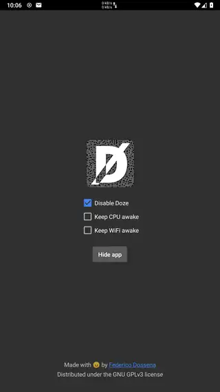

Since Doze was introduced in Android 6.0, it's been a constant source of pain for developers who can't keep background processes running reliably, and users who are constantly missing important notifications because the system automatically decides to kill background services. Some ROMs are worse th
SHA-256: 52329c5566ae5dc8071267f4c10df48a2c8e37eef26bed1032d8823efea96339

تطبيقات تانية لنفس المطوّر (6)
More apps from this developer: com.dosse
امسح الكود لفتح صفحة التطبيق
Scan to open this app page
لو كنز مش متثبت عندك: نزّل متجر كنز.
Not installed? Get the Kanz store.